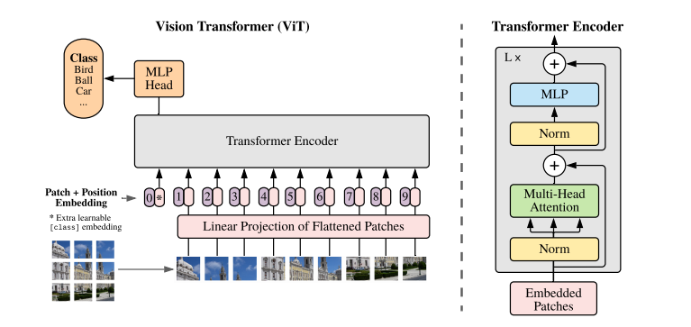

Pre-trained on large amounts of data, Vision Transformer (ViT) attains excellent results compared to sota and requires fewer computational resources to train.
Introduction
split an image into patches
直接把 patch 的内容 embed 当成序列扔进 transformer
在中等大小的数据集上训练时
Method

ViT
reshape the image $x \in R^{H \times W \times C}$ into a sequence of $x_p \in R^{N \times (P^2 C)}$
embedding 就是 linear projection 从 patch 的大小到 latent vector 的维度 $D$
加入了 position embedding (standard learnable 1D position embedding)
perfirm 2D interpolation of the pre-trained position embeddings may now longer be powerful
Hybrid Architecture
用做完 CNN 以后的 feature map 作为 input sequence 而非原图
Fine-Tuning and higher resolution
pre-train ViT on large datasets and fine-tune to downstream tasks
remove the prediction head and attach $D \times K$ 的一个 feedforward layer
-
ViT-Base 12 768 3072 12 86M
-
ViT-Large 24 1024 4096 16 307M
-
ViT-Huge 32 1280 5120 16 632M